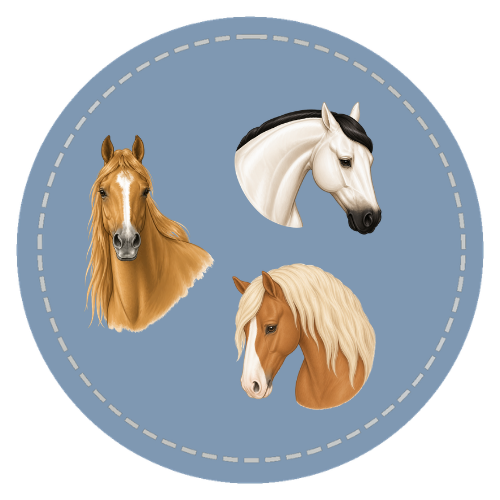

A science-grounded course in equine ethology, herd dynamics, and behavioral learning theory. Designed for horse enthusiasts who want a principled understanding of why horses behave as they do and how that knowledge applies to training, management, and welfare assessment.

Course Curriculum
Each course is organized into focused lessons designed to build knowledge step by step through structured instruction, visual learning, and applied practice.
Every lesson is built for self-paced learning with Standards alignment, Horse Bowl question integration, and real barn application throughout.
Start the Course
The science of horse behavior — covering why horses do what they do, from instinct through learned response to welfare evaluation.
Start the Course